Blog
Notes from production systems.
Practical advice on maintaining and improving legacy .NET systems, LHDN e-invoicing and venue operations: common pitfalls, real fixes and lessons from 11+ years of production experience.
Latest articles
From the SteadyDevs blog
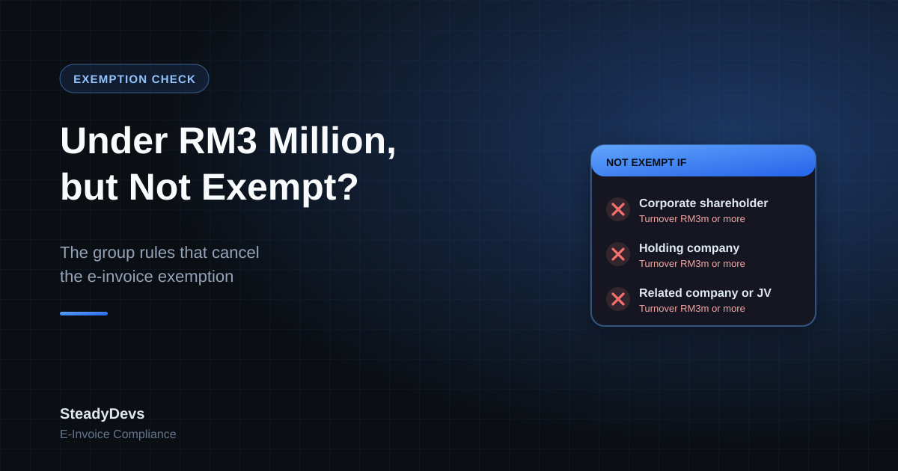
Under RM3 Million but Not Exempt: The E-Invoice Rule Catching Small Companies Out
The RM3 million e-invoice exemption sounds simple, but it doesn't apply to subsidiaries, companies with corporate shareholders, or businesses with large related companies. Here's how to check whether you really qualify.
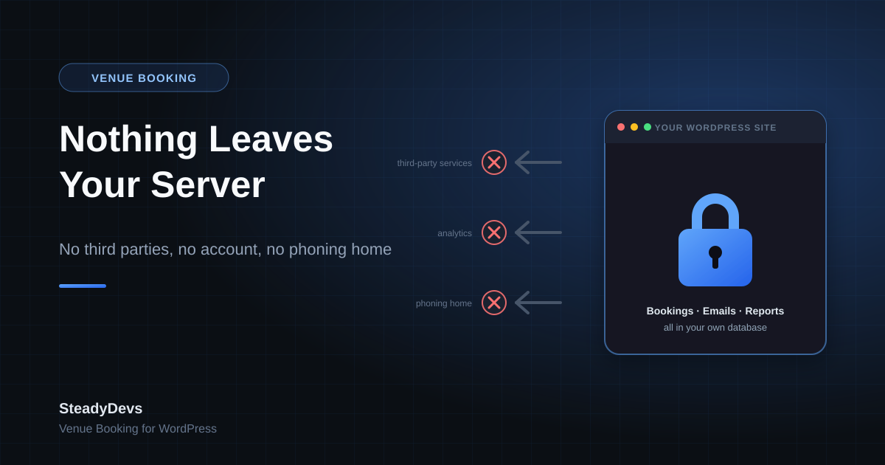
Nothing Leaves Your Server: Why Our Venue Booking Plugin Makes Zero External Connections
The free SteadyDevs Venue Booking plugin stores every booking in your own WordPress database and sends email through WordPress itself. No third-party service, no account, no phoning home. Here's why we built it that way and what it means for your venue.

LHDN Moves the E-Invoice Goalposts Again: RM3 Million Exemption and a 2028 Deadline
LHDN has raised the e-invoice exemption to RM3 million turnover, dropped the planned RM500k–RM1m phase, and extended Phase 4's relaxation to 31 December 2027. Here's what changed, who it affects, and what to do with the extra time.
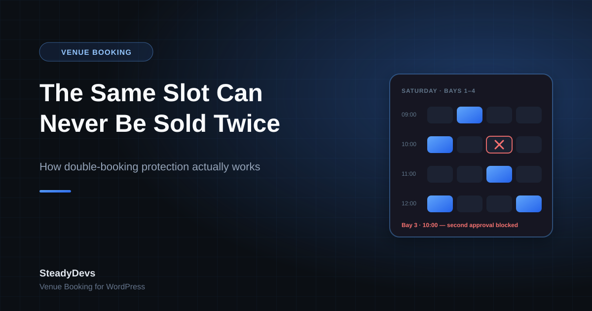
How Double-Booking Protection Actually Works in SteadyDevs Venue Booking
Most booking forms check availability when the page loads and hope for the best. Here's how our WordPress plugin makes sure the same slot can never be sold twice—even when two customers have the form open at the same moment.
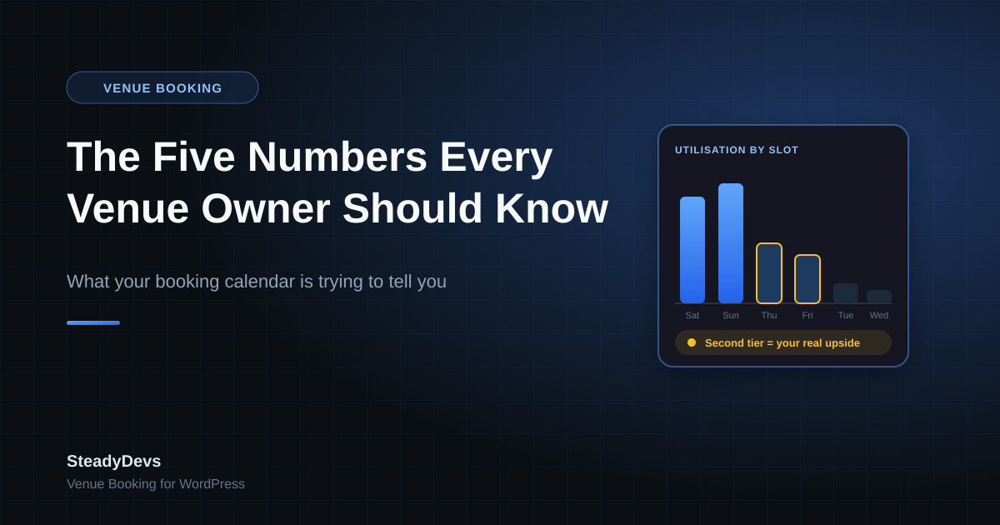
The Five Numbers Every Venue Owner Should Know (And Most Don't)
If your bookings live in a notebook or a WhatsApp thread, you know whether last month felt busy—but not which slots make money, who your best customers are, or how much capacity you're leaving unsold. These five numbers change that.
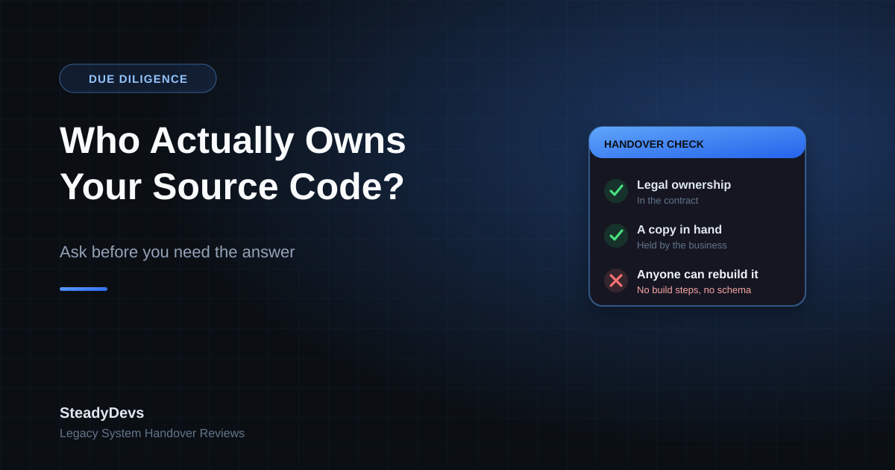
Who Actually Owns Your Source Code? The Question to Ask Before You Need the Answer
You paid for the system, so you own it—right? Ownership, possession and the ability to hand it to another developer are three different things, and businesses usually discover the difference at the worst possible moment.
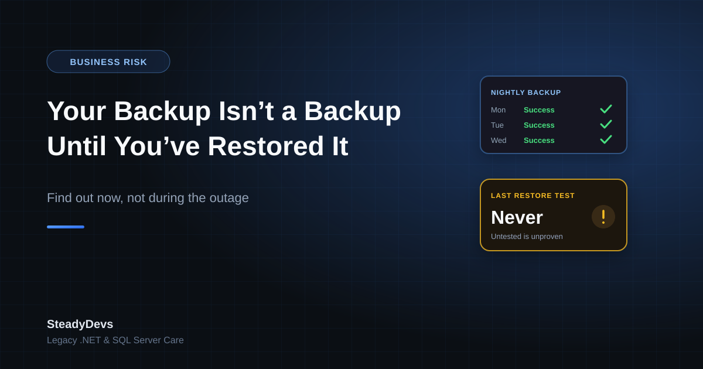
Your Backup Isn't a Backup Until You've Restored It
Almost every business we assess has backups. Far fewer have ever restored one. Here's how to find out whether your backups would actually save you—before the day you need them to.

Self-Billed E-Invoices in Malaysia: The LHDN Guideline Explained (2026)
Most businesses sorted out e-invoicing their customers. Self-billing is the other half: the transactions where you, the buyer, must issue the e-invoice. Here are the 9 cases in LHDN's guideline, the deadlines, the TINs to use, and what your system needs to handle them.
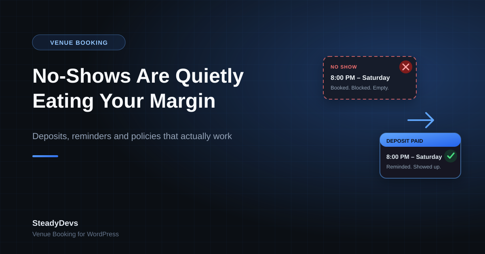
No-Shows Are Quietly Eating Your Venue's Margin: How to Cut Them Without Annoying Customers
An empty court at 8pm on a Saturday isn't a small loss—it's a peak slot you turned other customers away for. Here's why no-shows happen, what actually reduces them, and how to introduce deposits and reminders without scaring off regulars.
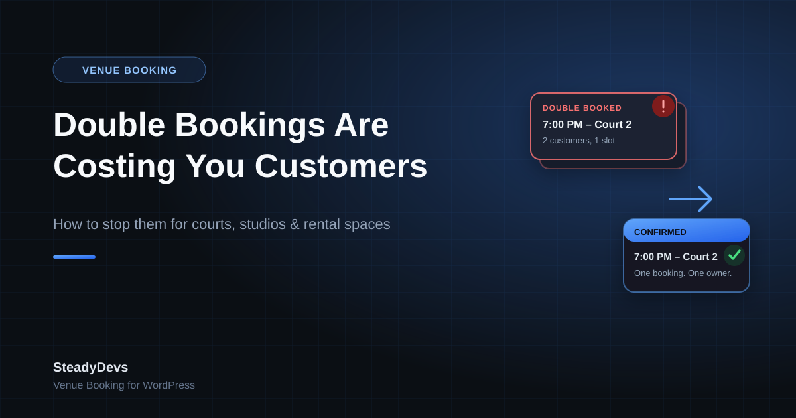
Double Bookings Are Costing You Customers: How to Stop Them for Courts, Studios and Rental Spaces
A double-booked slot doesn't just cost you one booking—it costs you the customer who shows up to find someone else already there. Here's why double bookings keep happening even with a shared calendar, and how a proper booking system removes the problem entirely.
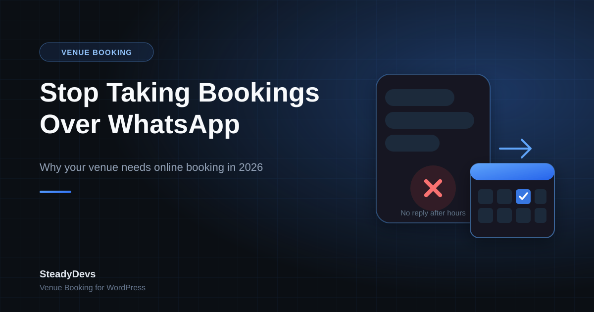
Stop Taking Bookings Over WhatsApp: Why Your Venue Needs Online Booking in 2026
If your courts, rooms, tables or bays are still booked through WhatsApp messages and a shared spreadsheet, you're losing bookings to double-entries, missed messages and slow replies. Here's what online booking actually fixes—and how to add it to your existing WordPress site in an afternoon.
AI Tools for Legacy System Maintenance: Hype vs Reality
AI coding tools promise to make maintaining old systems faster and cheaper. Some of that is real. A lot of it isn't—especially for the messy, undocumented legacy systems most businesses actually run. Here's an honest look at where AI helps and where it hurts.
The RM30,000 Mistake: Why 'Just Add That Feature' Is Never That Simple
That small feature you asked for—the one that 'should be quick'—can quietly become one of your most expensive decisions. Here's why simple-sounding requests turn into major projects, and how to scope them before they surprise your budget.
When 'It's Working Fine' Actually Means 'It's About to Break'
The most dangerous phrase in software is 'it's working fine.' Systems rarely fail without warning—they send signals for months first. Here are the quiet symptoms that a stable-looking system is closer to failure than you think.
Why Your Developer Wants to Rewrite Everything (And Why You Shouldn't Let Them)
Almost every developer who inherits a legacy system will, sooner or later, propose rewriting it from scratch. Sometimes they're right. Usually they're not. Here's how to tell the difference before you commit six figures and a year of risk.
E-Invoice Rejected by LHDN? The Most Common Validation Errors and How to Fix Them
A rejected e-invoice isn't just an inconvenience—it can hold up payments and trigger compliance gaps. Here are the validation errors Malaysian businesses hit most often with MyInvois, what each one really means, and how to resolve them.
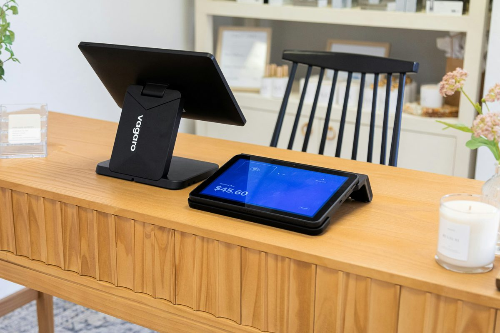
E-Invoice for B2C: How Retailers Handle Walk-In Customers Without Issuing Thousands of Invoices
Most walk-in customers don't ask for an e-invoice—so do you really have to issue one for every sale? Here's how consolidated e-invoicing works for B2C retail, what your POS needs to support, and the mistakes that trigger compliance problems.
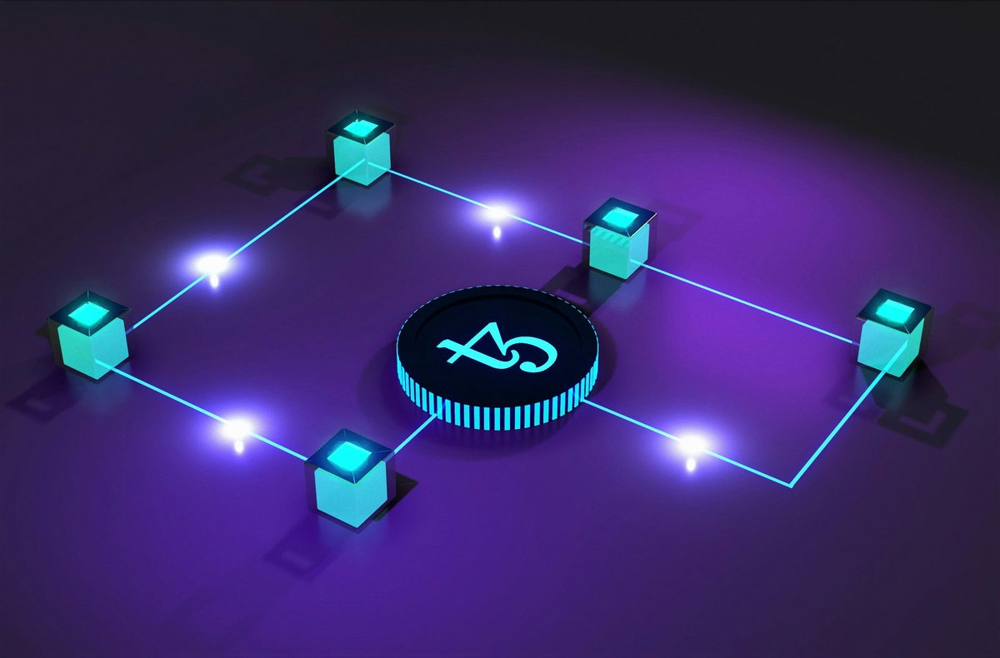
MyInvois API Integration: What Your Developer Needs to Know Before Connecting Your Legacy System
Connecting a legacy .NET system to LHDN's MyInvois API is more than a single endpoint call. Here's what actually goes into integration—authentication, digital signing, validation, and the pitfalls that catch most developers off guard.
What a Proper System Handover Document Should Contain (Free Checklist)
When a developer leaves, the difference between a smooth transition and a crisis is one thing: documentation. Here's exactly what a proper handover document should contain—a practical checklist you can hand to any developer before they walk out the door.
Windows Server & SQL Server End-of-Life: Is Your Legacy System Running on Borrowed Time?
Your business system works, so the aging Windows Server and SQL Server underneath it are easy to ignore. But when Microsoft ends support, those quiet servers become a security, compliance and insurance liability. Here is how to find out where you stand.

LHDN E-Invoice Phase 3 & 4: What Small Businesses Must Do Before the Deadline (October 2026 Update)
The e-invoice mandate now covers every business turning over RM3 million or more, plus many smaller companies in larger groups. Here's the current schedule, what Phase 4's relaxation until 31 December 2027 really allows, and what to do now.
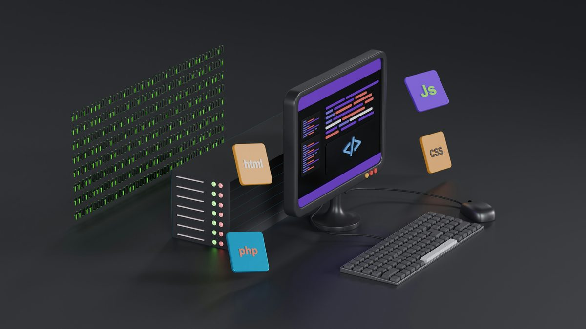
The Small Business Guide to System Integration: Connecting Your POS, Accounting, and Inventory
Tired of manually transferring data between your POS, accounting software, and inventory system? Learn how system integration works, what's actually involved, and realistic costs—based on real integration projects for Malaysian SMEs.
How to Add Modern Features to a 10-Year-Old System (Without Breaking Everything)
Your legacy system works, but customers want mobile apps, API integrations, and real-time features. Here's how to modernize incrementally without the risk of a catastrophic rewrite—with real examples from production systems.
Is Your Legacy System PDPA-Compliant? A Practical Guide for Malaysian Businesses
The Personal Data Protection Act isn't optional—and your legacy system probably wasn't built with PDPA in mind. Here's how to audit your system, identify gaps, and implement compliance without a costly rebuild.
5 Questions to Ask Before Hiring a Developer to Fix Your Legacy System
Not all developers can handle legacy systems. Hiring the wrong one wastes money and makes problems worse. Here are 5 critical questions that separate capable legacy system specialists from developers who will fail.
The True Cost of 'Free' Technical Support from Your Developer
Your developer says "just call me when something breaks" with no formal contract. Sounds convenient and cost-effective—until you calculate what this informal arrangement actually costs your business in hidden expenses and risk.
The RM50,000 Question: Cloud Migration vs. On-Premise Modernization for Legacy .NET
Should you migrate your legacy .NET system to Azure cloud or modernize on-premise? Both paths cost RM40,000-80,000+ but solve different problems. Here's a practical decision framework based on real Malaysian SME scenarios.
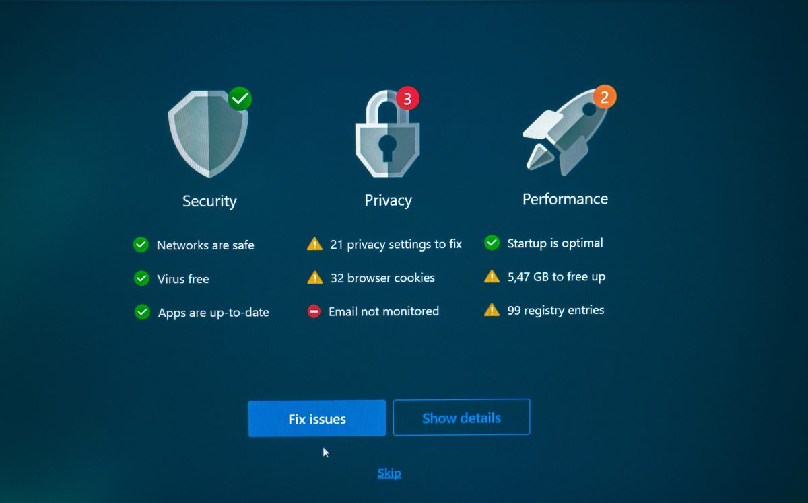
Should You Add Features to a Failing System? (The Stabilize-First Framework)
Your legacy system is unstable, but business needs new features. Adding features to fragile systems usually backfires. Here's how to decide when to stabilize first vs. when feature work makes sense—and what the trade-offs actually look like.
Your Developer Left. Now What? (Emergency Recovery Guide)
Your only developer quit, disappeared, or can't be reached. Your legacy system is running but nobody knows how it works. Here's your immediate action plan for recovering from developer departure without destroying the business.
The Excel Trap: When Spreadsheets Cost More Than Proper Software
Excel is free and flexible—until it's not. Many Malaysian SMEs running RM5M-20M operations still rely on spreadsheets for critical business functions. Here's when Excel stops being cost-effective and starts being a liability.
Your Developer Says the System is 'Too Old to Fix': Is That Actually True?
When a developer tells you your legacy system can't be fixed, are they right—or just reluctant? Here's how to verify the diagnosis, spot red flags of lazy assessment, and get a real answer about your system's future.
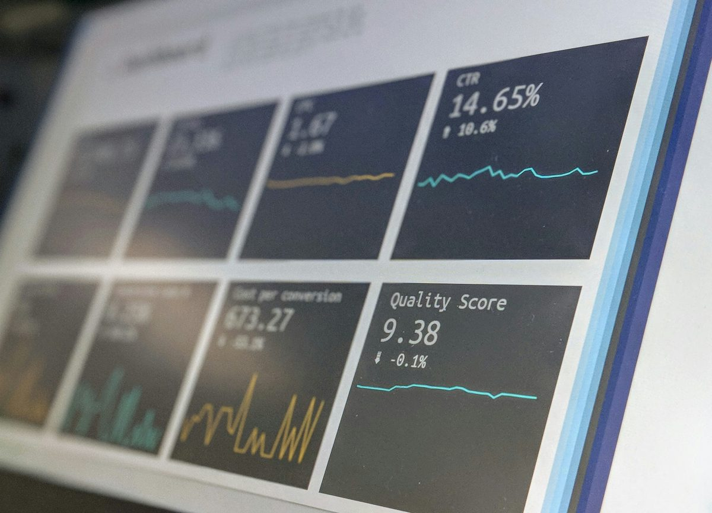
The 3-Month System Stabilization Sprint: A Framework for Crisis Mode
When your legacy system is actively causing business problems, you need a structured approach to stabilize fast. Here's a proven 90-day framework for taking systems from crisis to manageable—without a complete rewrite.
From Manual to Automated: What to Expect from Invoice Automation
Three Malaysian business scenarios that show what happens when you automate invoicing—measurable time savings, error elimination, cash flow improvement, and unexpected benefits most businesses don't anticipate.
What Happens to Your Business When the Developer Who Knows Your System Leaves
Most businesses don't realise how much critical knowledge lives in one person's head — until they're gone. Here's what actually happens, and how to protect yourself before it becomes a crisis.
5 Signs Your Business Is Ready for Automation (And What to Automate First)
Business automation isn't about replacing people — it's about stopping them from doing work that software should be doing. Here are 5 clear signs your business is ready, and what to automate first.
The Hidden Cost of Manual Invoicing in Malaysian SMEs
Manual invoicing costs Malaysian SMEs more than you think. Discover the hidden expenses in time, errors, cash flow delays, and missed opportunities—and why automation is no longer optional.
How to Know If Your Legacy System Can Be Saved (Honest Assessment)
Not every legacy system is worth saving. Here's a practical framework to assess whether yours can be fixed, should be replaced, or needs a hybrid approach—based on 11 years of real-world stabilization projects.
The Price of Ignoring That 'Small' Bug in Your Production System
That minor bug you're postponing? It's costing you more than you think. Real examples of how small ignored bugs cascade into expensive problems—and why fixing them now is always cheaper than later.
What Happens When You Delay Legacy System Maintenance
Every month you delay maintaining your legacy system, the problems compound. Here's the predictable cascade of consequences—and why fixing problems early costs a fraction of waiting until they're critical.
E-Invoice Malaysia: Is Your Legacy System Ready?
Malaysia's e-invoice mandate is already rolling out. Large and medium businesses are already mandated. If your legacy system can't adapt, you're facing compliance crisis. Here's what you need to know and do now.
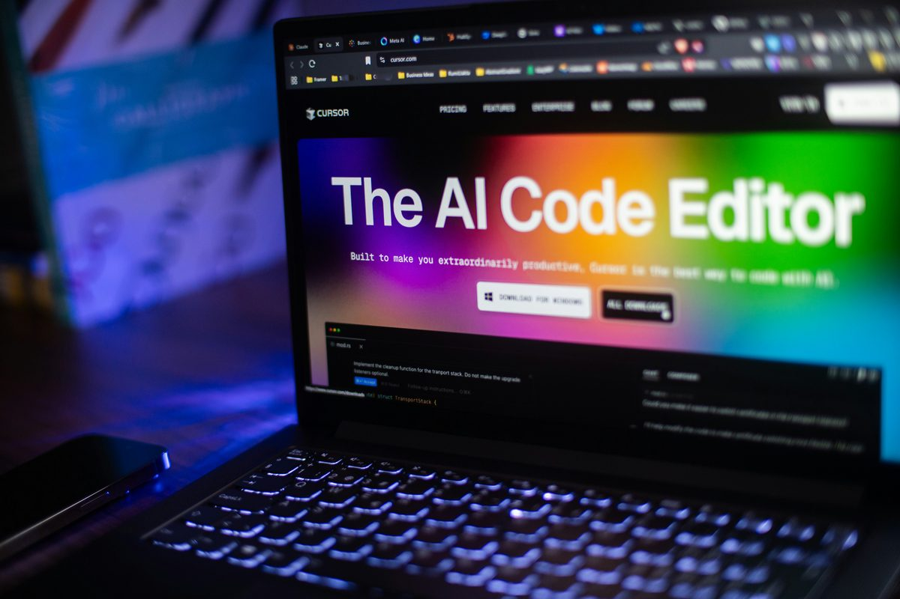
AI-Assisted Development Without the Code Chaos: Building a Pet Booking System
Can AI tools like Claude actually speed up development without creating unmaintainable code? Here's what happened when I used AI to build a complex booking system—and how to avoid the common pitfalls.
When to Refactor vs. Rewrite Your Legacy .NET System: A Practical Guide
Facing a difficult legacy .NET system? Learn when refactoring makes sense versus when a full rewrite is justified, based on 11 years of real-world experience with production systems.
5 Warning Signs Your Legacy .NET System Needs Professional Attention
Is your legacy .NET system showing signs of trouble? Learn the 5 critical warning signs that indicate it's time to seek professional help before small issues become major problems.